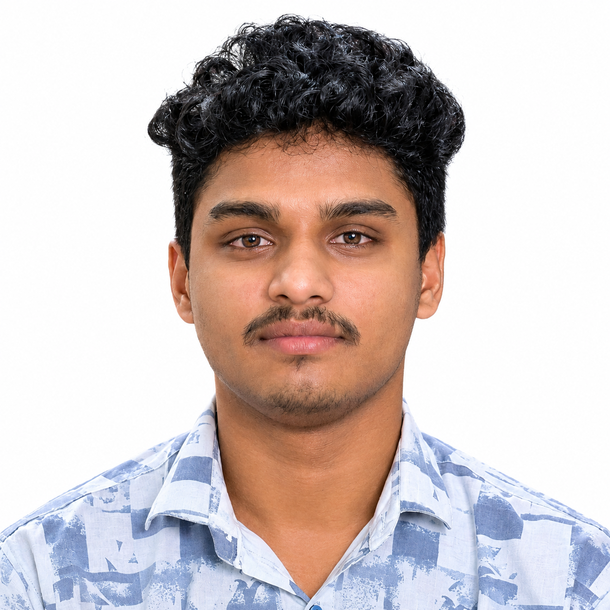
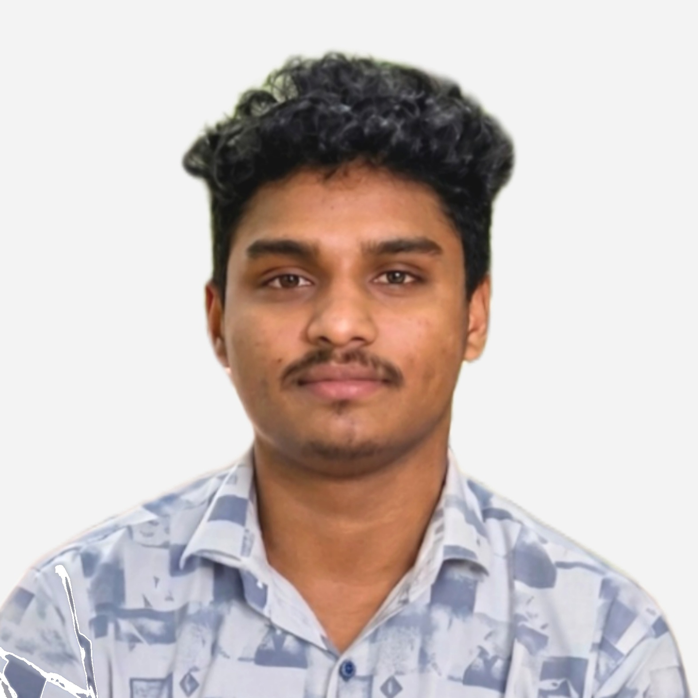
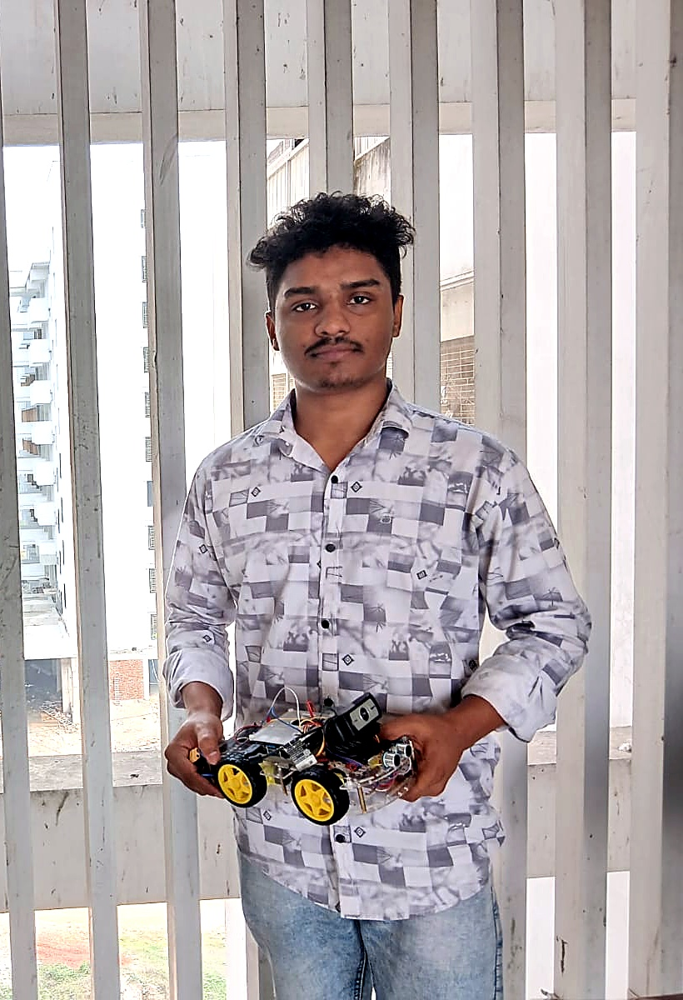
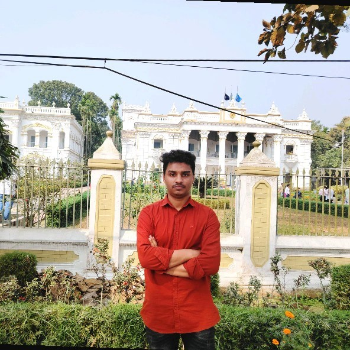

OBJECTIVE
TECHNOLOGY
HARDWARE
RESULT / STATUS
Technical Overview
Project Images

B.Sc. Engineering student at Jatiya Kabi Kazi Nazrul Islam University, working across power engineering, embedded systems, robotics, control and applied engineering research.
I am Imam Mehedi Hasan, an Electrical and Electronic Engineering student at Jatiya Kabi Kazi Nazrul Islam University.
My technical work combines electronics, embedded programming, robotics, automation and engineering problem-solving. I prefer learning through practical systems, measurement, simulation and prototype development.
My long-term direction is to grow as an engineer and researcher, with particular interest in power engineering, intelligent systems and applied research.

Electrical & Electronic Engineering
Power transmission, distribution, protection, reliability and practical electrical engineering applications.
Microcontrollers, sensor integration, IoT devices, real-time monitoring and hardware-software systems.
Computer vision, human-pose detection, mobile robots and autonomous decision-making.
Feedback systems, automation, actuator control and engineering prototypes.
Biomedical signals, sensing, communication-oriented systems and measurement.
Using machine learning and computer vision where they solve a measurable engineering problem.
Working under academic supervision on communication, sensing and engineering research-oriented projects.
Hands-on development of embedded and robotic systems using microcontrollers, Raspberry Pi, sensors and actuators.
Built and tested multiple mobile, legged and intelligent robotic prototypes.
Hands-on participation and project development around robotics and embedded engineering.
Maintaining project documentation across GitHub and a dedicated engineering portfolio.
Experimental investigation of radiation-level variation over time, with emphasis on measurement, data analysis and reproducibility.
EXPERIMENT • DATA ANALYSISFree space optical sattelite communication by adaptive link design to faster data tranfer among sattelite-sattelite,uplink and downlink.
RASPBERRY PI • LEASURE • ADAPTIVE CONTROL • MATLAB • DATA ANALYSISDevelop a optimized wall climbing robot that can climb both wall and celling.
ESP32 • HARDWIRE • ADAPTIVE CONTROL •MATLAB • DATA ANALYSISA concise CV covering academic background, technical skills, selected projects, research interests and engineering experience.
Each selected project now has a dedicated detail view for images, technical information, GitHub resources, papers and future demo links.


I am interested in engineering opportunities, research collaboration, academic projects and practical EEE work.